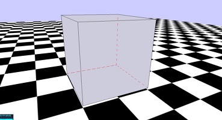

Three.js Examples
The goal of this collection is to provide a set of basic and instructive examples that introduce the various features in
Three.js. The source code for each page contains detailed comments.
Hosted at GitHub. Total examples: 45. Last updated: 12 March 2013 (now compatible with Three.js v56).
• Hello World
• Template
• Materials - Solid
• Color Explorer
• Wireframe
• Lines and Dashed Lines
• Multi-Wireframe Effect
• Vertex Colors
• Shapes
• Extrusion
• Text 3D
• Textures
• Sprites
• Texture - Repeat
• Subdivision Modifier - Cube
• SkyBox
• Translucence
• Shadow
• Reflection
• Particles
• Texture from Canvas
• Texture Animation
• Mesh Movement
• Chase Camera
• Multiple Cameras
• Camera to Texture
• Viewports - Dual
• Viewports - Quad
• Shader - Simple
• Shader - Explorer
• Video to Texture
• Webcam Test
• Webcam to Texture
• GUI
• GUI Controller
• Mouse Sprite
• Mouse Hovering
• Mouse Tooltip
• Model
• Animated Model
• Animated Model with Controls
• Collision Detection
• Marching Cubes Algorithm
• Constructive Solid Geometry
• Function Grapher
• Parametric Surface Grapher
• Parametric Curve Grapher
•

Hello World
A heavily commented but basic scene. Illustrates the setup of a scene, camera, renderer, event handlers (for window resize and fullscreen, provided by the THREEx library), mouse controls to rotate/zoom/pan the scene, mini-display for FPS stats, and setting up basic geometries: a sphere with lighting effects, a multi-colored cube, a plane with an image texture applied, and skybox/fog options for rendering objects distant from the camera.
Many of these features are described in more detail in the examples below.

Template
The "Hello World" code with most comments and meshes removed.

Materials - Solid
Illustrates the difference between the Basic, Lambert, and Phong materials.

Color Explorer
Illustrates the effects of changing the Color (Diffuse Color), Ambient Color, Emissive Color, Specular Color, Shininess amount, and Opacity amount.

Wireframe
Demonstrates how to create and apply wireframe materials.

Lines and Dashed Lines
Demonstrates how to create solid lines, dashed lines, and contains a function to convert geometries into line-style objects.

Multi-Wireframe Effect
Demonstrates a neat effect to display a wireframe-style object where the obscured lines display different than the visible lines (e.g. dashed vs. solid).

Vertex Colors
Assigning colors to vertices to achieve special effects such as gradients and randomization.

Shapes
Uses some of the built-in geometry constructors to create the following three dimensional shapes (and variations): cube, icosahedron, octahedron, tetrahedron, sphere, dome, cylinder, prism, cone, pyramid, frustum (truncated cone and truncated pyramid), torus, torus knots.

Extrusion
Create an array of 2D points,
make a 2D shape, and create an extrusion (a 3D shape whose cross-sections are the given 2D shape).

Text3D
Create a 3D text object (an extruded version of text rendered as a 2D image).

Textures
Demonstrates surfaces with textures (image-based materials), including shading and coloring effects.

Sprites
Sprites are images (not attached to geometries/surfaces) displayed in a scene, always orthogonal to the camera.
They can either appear in the 3D scene (useful as part of a particle effect) or rendered using screen coordinates (useful as part of a graphical user interface (GUI) or a heads-up display (HUD)).

Subdivision Modifier - Cube
Demostrates a function that interpolates additional points to a geometry, creating a "smoothing" effect. This example applies the modifier to a variety of cube geometries, resulting in spherical and beveled cubes.

SkyBox
Using textures to create a "SkyBox": backgrounds images projected onto a cube surrounding the rendering region, which creates the illusion of distant 3D surroundings.

Translucence
Illustrates using basic and phong-shaded translucent materials, making image textures translucent, using additive blending for a glow-like effect, and using image textures that already have alpha transparency.

Shadow
Using spotlights to create shadow effects in a scene.

Reflection
Creating a mirror-like material by projecting an image of the surroundings onto a object.

Particles
Create a particle effect using a group of sprites and alpha blending (or transparency).

Texture from Canvas
Create a canvas element via JavaScript, draw text or images on it, and then use it as a texture for a mesh.

Mesh Movement
Using the functionality provided by THREEx.Keyboard, translate and rotate a mesh, with the following controls:
W/S/Q/E: translate forwards/backwards/left/right (local).
A/D/R/F: rotate left/right/up/down (local).
UP/DOWN/LEFT/RIGHT: translate Z-/Z+/X-/X+ (global).

Chase Camera
Create a "chase cam" -- move the camera around together with a mesh. (Same controls as in "Mesh Movement" example.)

Multiple Cameras
Switch between multiple cameras: chase camera (press "1") and fixed top view (press "2"). (Otherwise, same controls as in "Mesh Movement" example.)

Camera to Texture
Move around a camera and project what it sees it onto a texture. (Same controls as in "Mesh Movement" example.)

Viewports - Dual
Simultaneously render two different camera views onto the same canvas element.
(Same controls as in "Mesh Movement" example.)

Viewports - Quad
Simultaneously render four different camera views onto the same canvas element: one perspective camera and three
orthographic cameras along the axis directions (similar to many 3D modeling software configurations).
(Same controls as in "Mesh Movement" example.)

Shader - Simple
Demonstrates how to set up a simple pre-defined shader (sepia coloring).

Shader - Explorer
Illustrates the effects of changing the parameters in different shaders (sepia, vignette, dot screen).

Video to Texture
Display a video as a texture. Keyboard controls: "P" to play/resume, "SPACE" to pause, "R" to rewind, "S" to stop.

Webcam Test
Displays user webcam image on this webpage. Requires Webcam to run,
user needs to accept permissions to run, requires WebRTC compatible browser (see http://www.webrtc.org/).
(No Three.js code required; this example is a lead-in to the following example.)

Webcam Texture
Displays user webcam image as a texture on a mesh. Requires Webcam to run,
user needs to accept permissions to run, requires WebRTC compatible browser (see http://www.webrtc.org/).
Press P to pause webcam (image freezes) and R to resume webcam.

GUI
Create a graphical user interface (using the DAT.GUI library).

GUI Controller
Create a graphical user interface (using the DAT.GUI library) that controls the appearance of a cube mesh.

Mouse Sprite
Display a sprite at the current position of the mouse. (May be useful for targeting icon or mouse pointer icon.)

Mouse Hovering
Change the color of an object in the scene when the mouse hovers over it.

Mouse Tooltip
Create a tooltip-style effect to display mesh names when mouse hovers. (Uses ideas from examples: Mouse Sprite, Mouse Hovering, and Texture from Canvas.)

Model
Loading a static 3D model (exported from Blender to JavaScript).

Animated Model
Loading an animated 3D model (exported from Blender to JavaScript).

Animated Model with Controls
Loading an animated 3D model (exported from Blender to JavaScript). Model moves with arrow keys; model animates when moving and stops animating when not moving.

Collision Detection
Detect when the vertices of a mesh intersect with another object. (Move the wireframe cube with the arrow keys and rotate with W/A/S/D; the text "Hit" will appear at the top of the screen once for every vertex intersection.)

Marching Cubes Algorithm
An illustration of the "Marching Cubes" algorithm for triangulating a level surface ("isosurface") of an implicitly defined function f(x,y,z) = c. See the websites:
http://en.wikipedia.org/wiki/Marching_cubes/
http://paulbourke.net/geometry/polygonise/

Constructive Solid Geometry
Create a new mesh from the union, intersection, or subtraction of two meshes.
Uses the library at http://github.com/chandlerprall/ThreeCSG/